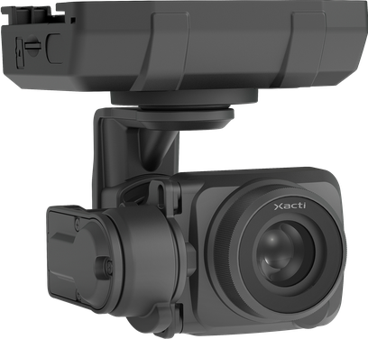
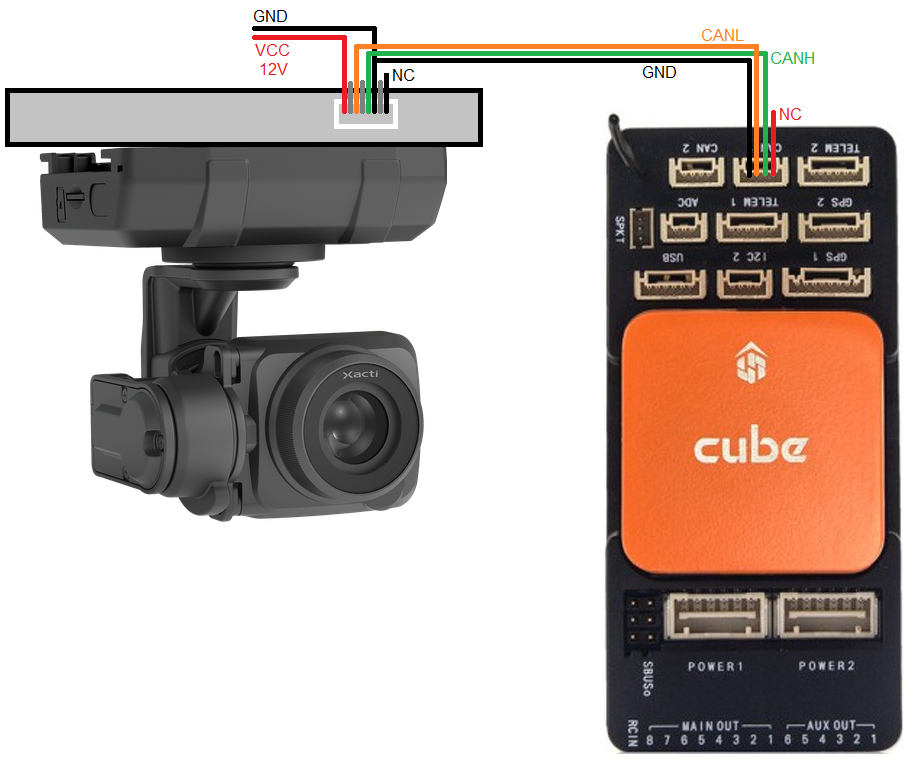
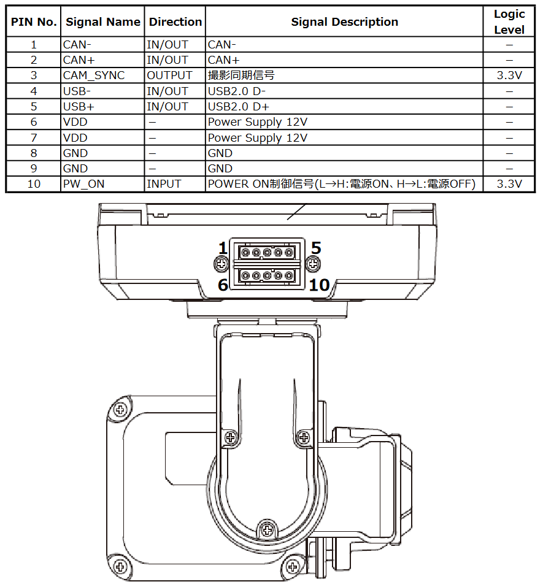

[copywiki destination=”plane,copter,rover,blimp”]
Xacti Gimbals¶
The Xacti Camera Gimbals are 3-axis camera gimbals which communicate with ArduPilot using the DroneCAN protocol.
Note
Support for these gimbals is available in ArduPilot 4.5.0 (and higher)
Some images courtesy of xacti-co.com
Where to Buy¶
These gimbals can be purchased directly from Xacti
Connecting to the Autopilot¶
 {kind=link}
{kind=link}
The top image shows how to connect the gimbal’s CANL, CANH and GND pins to one of the autopilot’s CAN ports when using the gimbal mounting plate option. The bottom image shows the camera’s pinout which may be used with a custom designed mount.
Connect to the autopilot with a ground station and set the following parameters and then reboot the autopilot. The params below assume the autopilot’s CAN1 port is used,
CAN_D1_PROTOCOL to 1 (DroneCAN)
CAN_P1_DRIVER to 1 (First driver)
MNT1_TYPE to 10 (Xacti) and reboot the autopilot
MNT1_PITCH_MIN to -90
MNT1_PITCH_MAX to 25
MNT1_YAW_MIN to -90
MNT1_YAW_MAX to 90
CAM1_TYPE to 4 (Mount)
MNT1_RC_RATE to 30 (deg/s) to control speed of gimbal when using RC targetting
RC6_OPTION = 213 (“Mount Pitch”) to control the gimbal’s pitch angle with RC channel 6
RC7_OPTION = 214 (“Mount Yaw”) to control the gimbal’s yaw angle with RC channel 7
Optionally these auxiliary functions are also available
RC9_OPTION = 166 (“Camera Record Video”) to start/stop recording of video
RC9_OPTION = 168 (“Camera Manual Focus”) to adjust focus in and out
RC9_OPTION = 169 (“Camera Auto Focus”) to trigger auto focus
Control and Testing¶
See Gimbal / Mount Controls for details on how to control the gimbal using RC, GCS or Auto mode mission commands